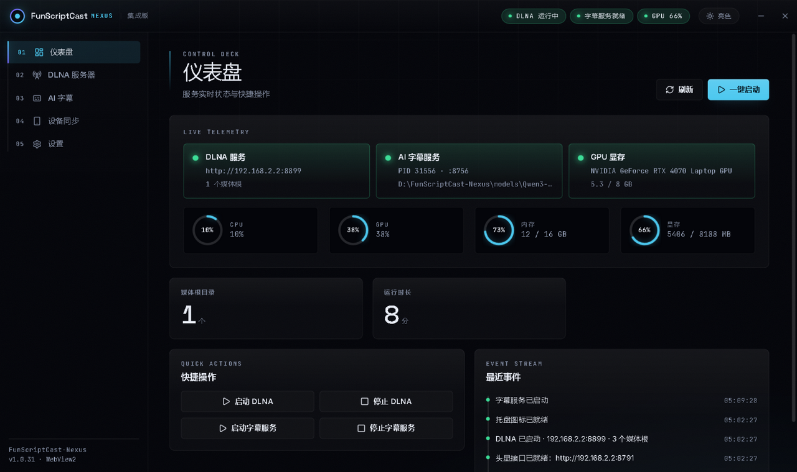
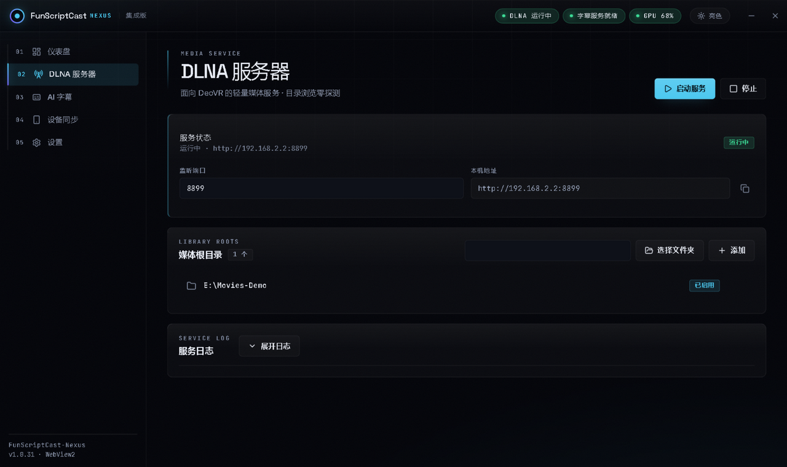
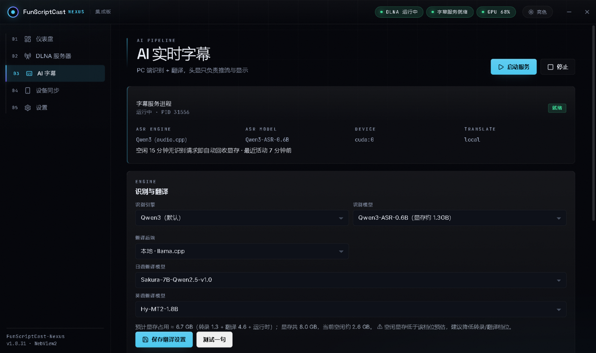
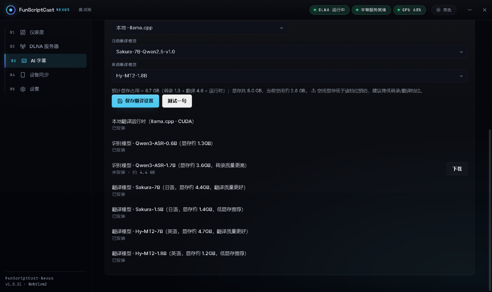
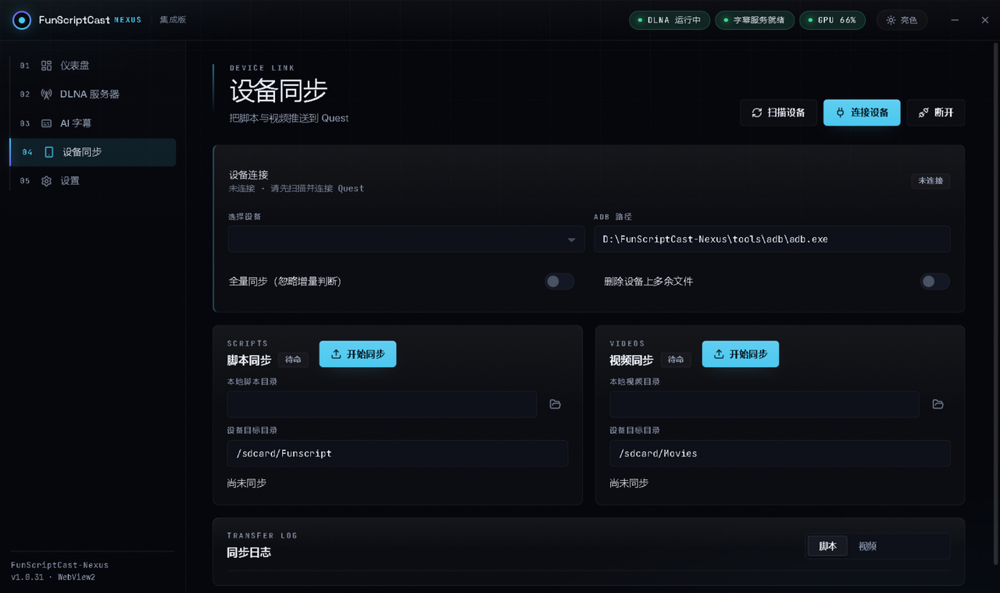

下载 FunScriptCast-Nexus-Setup，向导里选安装目录。选空间充足的盘（模型以十 GB 计），C 盘一个字节都不落。
「DLNA 服务器」页添加电脑上的视频目录，服务自动启动；头显 / DeoVR 在同一局域网会自动发现设备 FunScriptCast-DLNA。
「AI 字幕」页模型列表点下载：至少一个识别模型（0.6B 够用 / 1.7B 更强），再选一个翻译模型（日语 Sakura / 英语 Hy-MT2，各有低显存与高画质两档）。支持断点续传。
点「启动服务」，状态变「就绪」即可。播放器正常播放，中文字幕自动上屏；空闲 5 分钟（可调）自动回收显存，下次播放自动再起。




| 类别 | 条目 | 显存约 | 说明 |
|---|---|---|---|
| 识别 | Qwen3-ASR-0.6B | 1.3GB | 默认档，速度质量均衡 |
| 识别 | Qwen3-ASR-1.7B | 3.6GB | 转录质量更高（分片自动合并） |
| 日语翻译 | Sakura-7B / 1.5B | 4.4 / 1.4GB | 7B 质量更好，1.5B 低显存推荐 |
| 英语翻译 | Hy-MT2-7B / 1.8B | 4.7 / 1.2GB | 7B 质量更好，1.8B 低显存推荐 |
| 运行时 | llama.cpp（CUDA） | — | 本地翻译必需，一键获取 |

翻译换低显存档（Sakura-1.5B / Hy-MT2-1.8B），或把识别换回 0.6B。
多为服务刚启动的一次性成本（模型加载 + 预热），之后正常。
仪表盘看「AI 字幕服务」是否就绪；模型未安装会在下载列表标出。
直接重试，断点续传接着下。
关程序后删安装目录里的 data\，即恢复出厂（模型不受影响）。